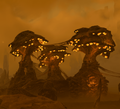

尖啸虫巢穴
the 尖啸虫巢穴 is an 可选目标 contained within a group of 终结族 structures. For as long as they are standing, they will spawn 尖啸虫: 飞行 终结族 that flock around the nest until a 绝地潜兵 draws near. The nests consist of two or three mushroom-like structures similar in shape to Spore 喷吐者 which act as a spawn point for the 尖啸虫. To 完成 the 可选目标, 绝地潜兵 must 摧毁 the structures, after which the 尖啸虫 will cease 生成.
目标 Steps
- 摧毁 尖啸虫巢穴
- Reward:
 200 & 50
200 & 50
结构解析
Disclaimer: Each highlighted part with a count has its own 生命值. Parts without a count share 生命值 pools.
1) Parts with their HP listed as "Main" do not have their own individual 生命值. All 造成伤害 to these parts is transferred to the enemy's 主生命值 pool.
2) Refer to 护甲 values and enemy 耐久度 as defined in 伤害 for more information.
3) 造成伤害 to a part will also be transferred in part or in full to 主生命值. If set to 0%, no 伤害 is transferred.
4) If set to "Yes", 伤害 transferred 对主血量 is capped by the combined 生命值 and 构造 of the part.
5) 构造 acts as a secondary 生命池 that, once Main or limb 生命值 has been depleted, may decay. The first number is the total 构造 and the second is the 衰退速率. If set to 0/s there is no decay and the 构造 behaves as extra 生命值.
6) ExDR means 爆炸 伤害抗性, and can 射程 from 0 to 100%. If set to 100%, the limb cannot take 爆炸伤害; The 爆炸伤害 will instead 目标 Main. Refer to 伤害 for more information.
- Note: This 机械师, known as Affected By 爆炸 can only occur once per 爆炸, regardless of 100% ExDR parts hit, and the 爆炸's 护甲穿透 must match or exceed 主体护甲 to deal 伤害 对主血量. However, if the same 爆炸 has already damaged Main, this 机械师 will not trigger.
战术信息
- The 建筑 has
 轻型 护甲 and can be destroyed by most 武器 or 战略配备. However, its 100% 耐久 narrows the amount of 有效 primary 武器库 to 摧毁 it quickly and with less 弹药 使用.
轻型 护甲 and can be destroyed by most 武器 or 战略配备. However, its 100% 耐久 narrows the amount of 有效 primary 武器库 to 摧毁 it quickly and with less 弹药 使用. - 尖啸虫 will only spawn if there are 绝地潜兵 within 130 meters of the nest detected by the enemy. 绝地潜兵 may know the 距离 of a point by pinging it.
- Laser 武器 such as LAS-5 Scythe or LAS-7 Dagger are capable to easily dispatch 尖啸虫 when getting close to a 尖啸虫巢穴, as the hitscan nature of these 武器 makes them ideal for consistently hitting and igniting agile fliers.
- It is advised to look up before calling a NUX-223 Hellbomb since 绝地喷射舱 might stuck due to mushroom-like nature of nest and waste the opportunity to quickly 完成 the 目标.
- While not recommended, a three landed hellpods is enough to destoy one tower.
- Due to the 危险 nature of this 建筑, using a NUX-223 Hellbomb to 摧毁 it is not recommended. Instead, engage it from outside of the 尖啸虫 生成 射程 with 武器 such as FAF-14 Spear, GR-8 无后坐力炮 or AC-8 机炮 with FLAK rounds.
- 载具 such as EXO-49 Emancipator 外骨骼机甲 or TD-220 Bastion are very 克制 几个 尖啸虫 Nests in a single use.
- A few shield bashes from EXO-55 Breakthrough 外骨骼机甲 is enough to destoy one tower without consuming his flak cannon 弹药.
- 一 E/MG-101 重机枪部署支架 has enough 弹药 to 应对 3 towers with 弹药 to spare.
- the MGX-42 Bullet Storm can 摧毁 a single tower at the 费用 of nearly its full 弹匣. The weapon's easily replaceable nature makes this 策略 viable (if lengthy), but it's best used to finish off a tower that's already been damaged.
- 单个 EAT-17 and a few 秒 of Bullet Storm 火焰 will 摧毁 a single tower, freeing the second EAT-17 from the same 绝地喷射舱 to be used on a second tower.
- 载具 such as EXO-49 Emancipator 外骨骼机甲 or TD-220 Bastion are very 克制 几个 尖啸虫 Nests in a single use.
图集

Some 尖啸虫 Nests
变更历史
补丁
描述
1.003.101
2025-06-10
Change
- 敌人 will no longer automatically detect you when you're near 终结族 spawners or spawners that generate flying 敌人. Instead, these spawners will now only activate if an enemy has already identified you as a 目标.
1.001.002
2024-08-06
Fix
- Fixed naming of 尖啸虫 nests as 虫穴 when pinging.
1.000.103
2024-03-20
未记录变更
- 生成速率 of 尖啸虫 Nests have been 已增加.
1.000.102
2024-03-12
Addition
- Added to the game.
捕食者 Strain
Spore Burst Strain
装甲兵 • Brawler • 机械统帅 • Rocket Raider • 特攻 Raider • Marauder • MG Raider • 狂暴者 • 蹂躏者 • Rocket 蹂躏者 • 重型 蹂躏者 • 侦察纵步者 • Reinforced 侦察纵步者 • Hulk Obliterator • Hulk Scorcher • Hulk Bruiser • War Strider • Annihilator Tank • Shredder Tank • Barrager Tank • 炮舰 • 运输舰 • 移动工厂
Jet Brigade
Incineration Corps
Cyborg Legion
Radical • Agitator • Vox Engine
防空 阵地 • 机器人制造厂 • 机器人 MG 阵地 • 机器人哨站 • Bulk 构筑者 • Cannon Turret • 摧毁 广播 网络 • 探测器 Tower • Enemy Bio-Processors • Erase 恐怖分子 Memorials • 炮舰 设施 • 迫击炮台 • 破坏 Air Base • 战略配备干扰器 • Bunker Turret
Appropriators
Structures
Main 目标
Activate Oil Pumps • Activate TCS+ 车站 • Activate 终结族控制系统 • Blitz 搜索与摧毁/终结族 • Blitz: Secure 研究 Site • Chart 终结族 Tunnels • Cleanse Infested District • 收集 Gloom Spore Readings • 收集 Gloom-Infused Oil • 收集 Meteorological Data • Conduct Mobile E-711 撤离 • Deactivate 终结族控制系统 • Deploy Dark Fluid • 摧毁 Spore Lung • 消除 Bile Titans • 消除 Brood 指挥官 • 消除 Chargers • 消除 穿刺虫 • Enable Oil 撤离 • 歼灭 终结族 Swarm • 撤离 E-711 • 撤离 研究 Probe Data • Nuke Nursery • Purge Hatcheries • 重新开始 Pumps • Restore Air Quality
Annex Untapped Mineral Sites • Blitz 搜索与摧毁/机器人 • Blitz: 摧毁 Bio-Processors • 突击兵: 获取 证据 • 突击兵: 撤离 Intel • 突击兵: Secure Black Box • Confiscate Assets • 摧毁指挥碉堡 • 摧毁 广播 网络 • 消除 机器人 移动工厂 • 消除 机器人 Hulks • 消除 Devastators • 歼灭 机器人 Forces • Halt Cyborg 生产 • Neutralize Ground-to-Orbit Defenses • Rapid 获取 • 破坏 Air Base • 破坏 Orgo-Plasma Synthesis • 破坏 Supply Bases • Seize Industrial 复杂
Optional 目标
进行地质勘测 • 摧毁 Rogue 研究 车站 • 发射洲际导弹 • Mobile Radar • 雷达站 • 增援 Pods • SEAF 大炮 • SEAF SAM Site • 传播民主 • Terminate 非法 广播 • Upload Escape Pod Data
防空 阵地 • 妥协 机器人 Defenses • 摧毁 广播 网络 • 探测器 Tower • Enemy Bio-Processors • Erase 恐怖分子 Memorials • 炮舰 设施 • Intercept Convoy • 迫击炮台 • Raze Strategic 基础设施 • 战略配备干扰器